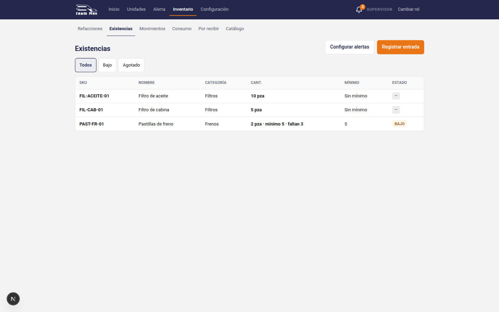
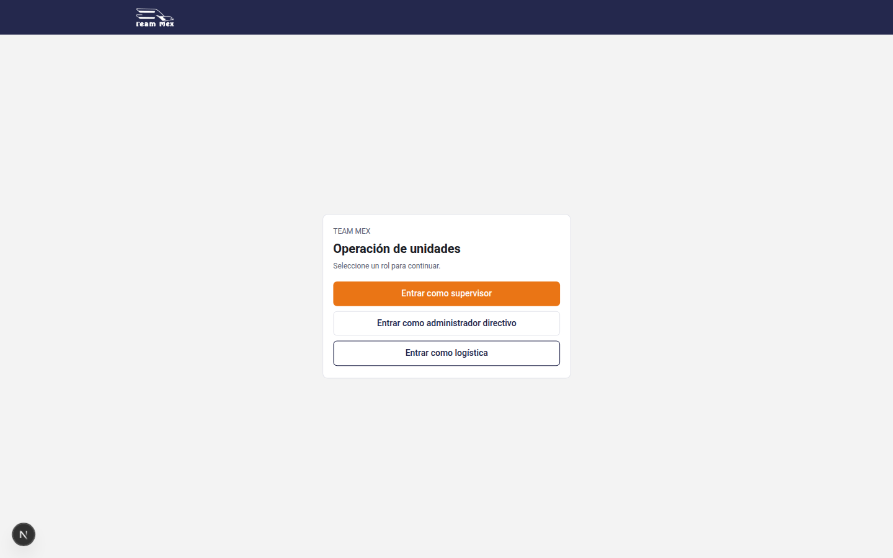
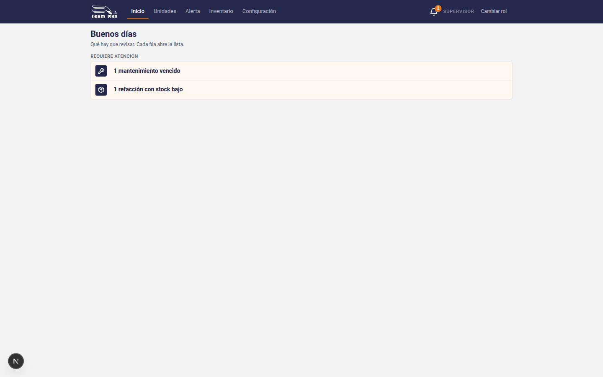
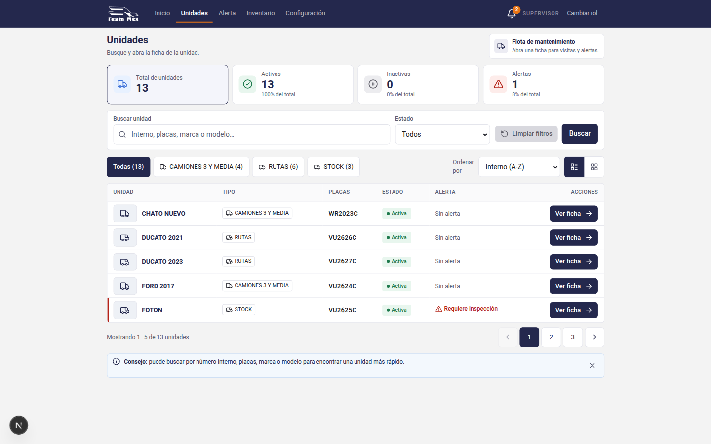
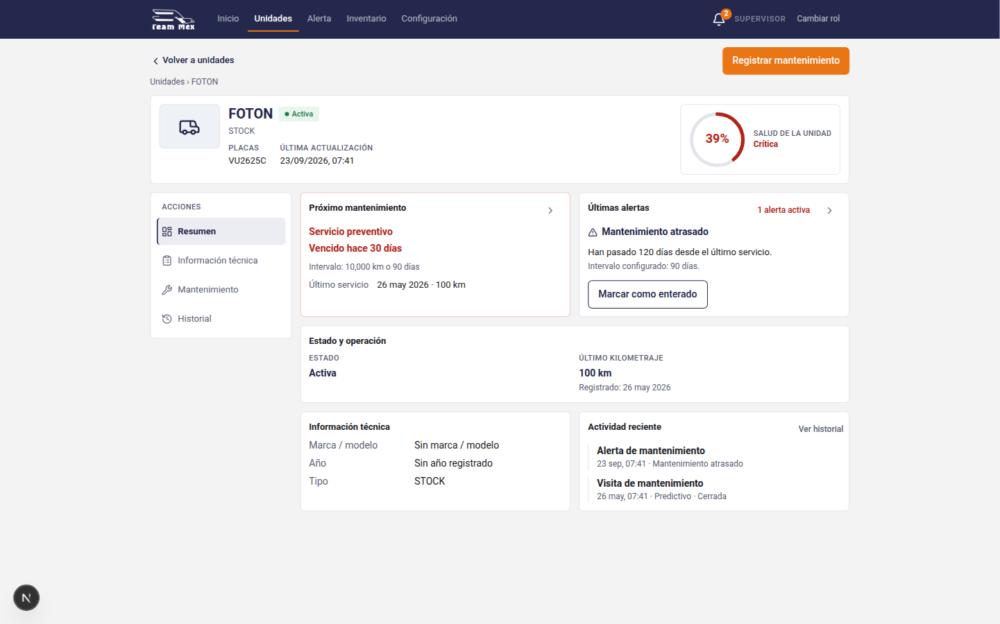
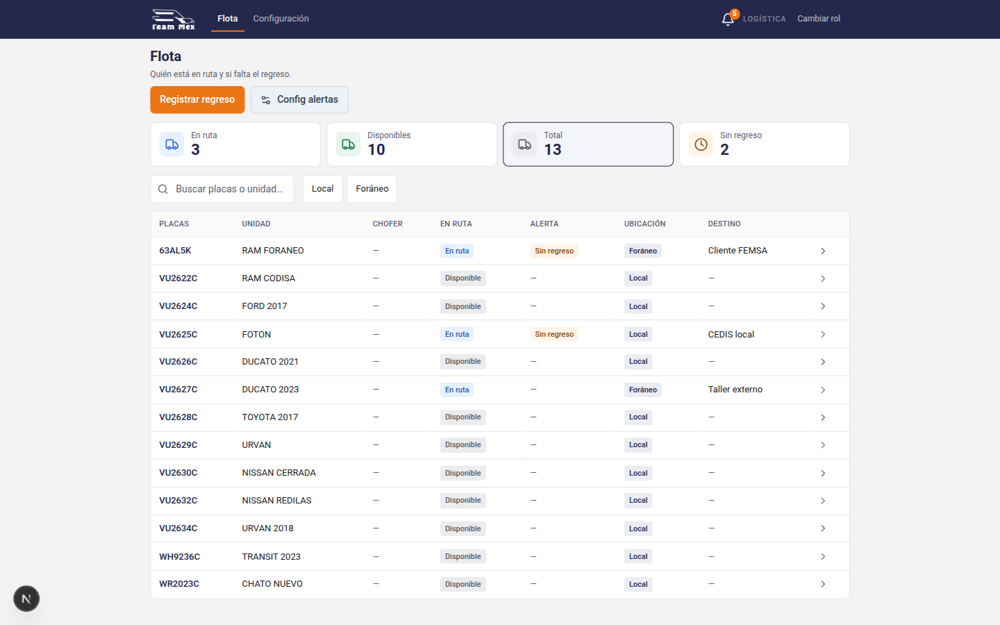

De módulos sueltos a herramienta de patio
La app ya tiene la marca en los tokens: navy #24284D, naranja #EA7515 para un solo acto, fondo #F3F3F3, Roboto. Lo que se siente genérico es la composición. Siete módulos pesan igual, y Unidades y Flota abren con cuatro tarjetas del mismo tamaño, una de ellas con icono azul que no es Team Mex.
Estos HTML no cambian web/src. Si se pintan en la app, hace falta spec UX: chocan con briefs que hoy piden la tira de KPI.
Tres escritorios
- Taller — Supervisor y Admin. ¿Qué unidad hay que atender? Ahora, la ficha y la visita.
- Patio — Logística y Admin. ¿Quién salió y quién no regresó? El tablero.
- Almacén — Supervisor y Admin. ¿Qué pieza falta? Existencias es la puerta. Abajo.
Catálogo quieto: choferes, tipos, sitios y umbrales siguen ahí, dentro de “Catálogo” en la barra. Dejan de ser hermanos de Inicio o Flota.
La campanita sigue siendo el inbox. No es el escritorio. El punto naranja del conteo se conserva: es chrome, no un segundo botón.
Gramática de cada pantalla
- Lugar —
TALLER · FICHA. El oficio, no el nombre del feature. - El caso — un solo tipo grande: FOTON, “1 requiere atención”, “2 sin regreso”.
- El acto — un naranja, o la fila misma.
- La lista — densa. La excepción con fondo cálido. Lo normal en gris.
- El apoyo — historial, VIN, hints, abajo y chico.
El objeto de los mocks es el catálogo demo: FOTON / VU2625C es el mantenimiento vencido. RAM FORANEO (63AL5K, FEMSA) y FOTON (CEDIS) son los dos sin regreso. En los docs de jerarquía ese patrón de ficha se llama U-101.
Pantallas
Almacén, sin sexta receta
Existencias ya responde la pregunta (Pastillas de freno, 2 pza, mínimo 5, faltan 3, badge BAJO, un naranja “Registrar entrada”). No hace falta otra pantalla de propuesta. Lo que sobra es la barra de seis: Refacciones, Existencias, Movimientos, Consumo, Por recibir, Catálogo, al mismo nivel que el trabajo. La puerta del almacén es Existencias. El catálogo de piezas queda detrás.

Hoy
No hay suite Playwright en el repo. Estas capturas son la app en marcha, rol Supervisor salvo el tablero (Logística).





Si esto se implementa
- ui-crm-elevation-v0 pide la tira de KPI en Unidades. El mock de unidades la quita.
- brief-logistica-flota-visual-v0 pide En ruta / Disponibles / Total / Sin regreso como KPI. El tablero deja un solo número.
- ficha-unidad-resumen-v0 usa el riel Acciones. El mock lo vuelve subnav.
- PAGE_PATTERNS deja Inicio sin naranja. Ahora propone un naranja para abrir el caso dominante.
No se tocó dominio, API, notify ni el dual-stack. Andon no muestra stock. El patio no es el hub de mantenimiento.